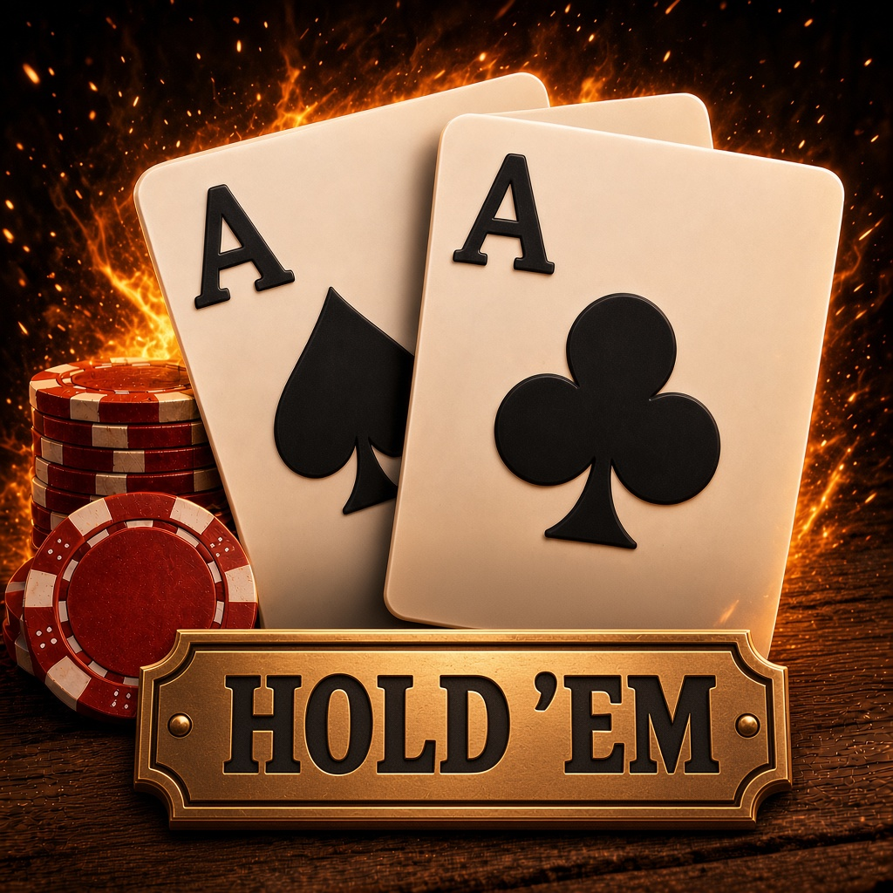
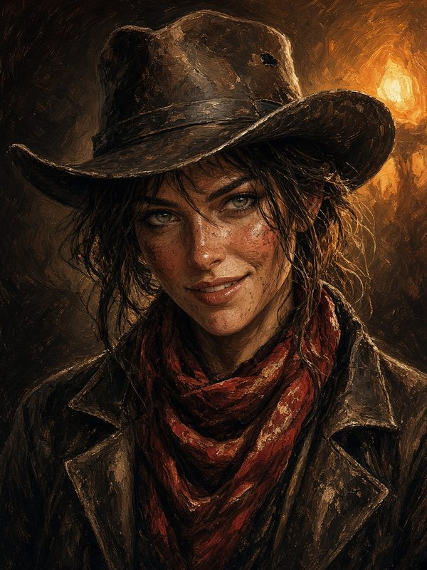
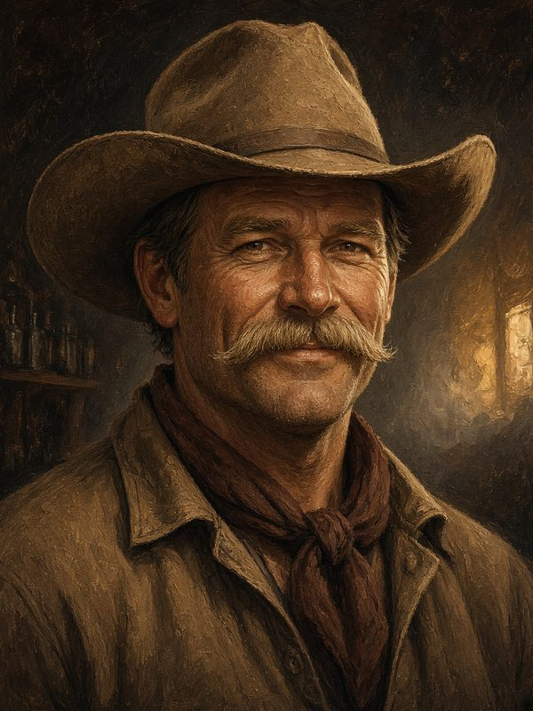
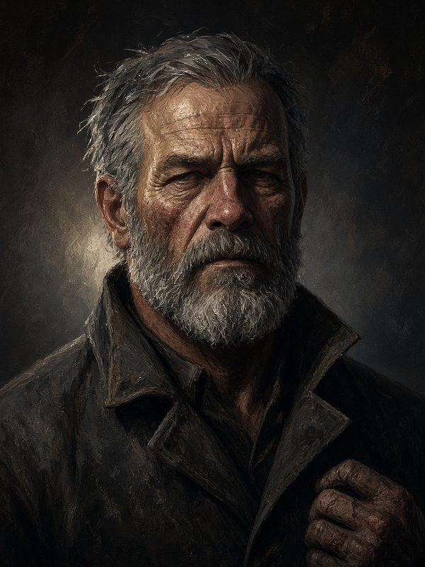
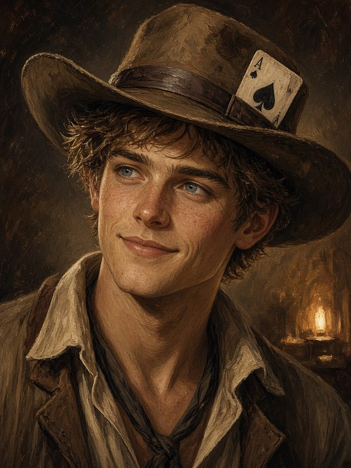
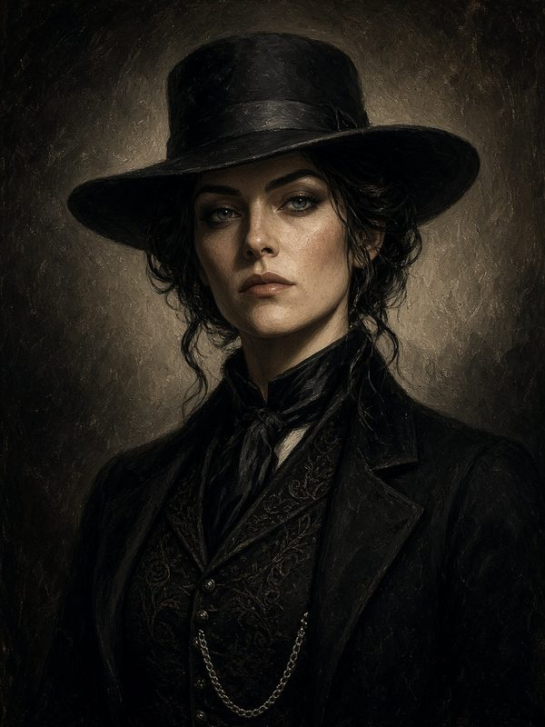

Dead Man's Hand: Poker Coach
Learn Texas Hold'em. Offline.
Simmo Games
#4 in Card
GET
Offers In-App Purchases
Previews & Screenshots
App previews play first, with sound off — just like the App Store
Scroll for more →
The poker game that teaches you poker.
Pull up a chair in a smoky frontier saloon — or at a felt table pitched in the middle of a fight cage — and play Texas Hold'em against five outlaws with real personalities. No accounts. No ads between hands. No real-money bets. Just you, the cards, and a coach in your corner.
A COACH IN YOUR CORNER
After any hand, ask the table coach for a review. Maximilian — the eye-patch bandit holding court at the saloon bar — walks you through why you won or lost, shows the key decision, and leaves you with one thing to try next time. Play the Octagon and Frankie Fast-Hand does the same from inside the cage. Set the coach to review every hand, only notable hands, or stay quiet until you ask.
STUCK? ASK "WHAT WOULD AI DO?"
On your turn, one tap reveals what a card-counting pro would do with your exact cards: the recommended action, your estimated equity, the pot odds, and a plain-English reason. Use it as training wheels, check it after you've decided, or leave it alone and play your own game.
LEARN FROM SCRATCH
Never played Hold'em? The rules and the full hand-rankings chart are one tap away, even mid-hand. Start by tapping "What would AI do?" every turn; within a session you'll be reading the board on your own.
FIVE RIVALS WITH REAL PERSONALITIES
Sam Six-Shot, Billie Quickdraw, Jesse Deadeye, Charlie Cold-Iron, Frankie Fast-Hand, Riley Black-Hat and Casey Trigger take turns at the table and play like people, not slot machines: some tight, some reckless, some on tilt after a bad beat. They bluff, they have tells — and sometimes the tells are lies. The AI makes decisions with genuine card mathematics plus human-like noise. It never sees your cards.
EXTRAORDINARY PLACES
Every table is a seat in a living 3D scene — chips riffle, cards slide, characters watch you across the felt.
• THE SALOON — brass taps, bottle-lined shelves, frontier hospitality.
• THE OCTAGON — heavyweight bruisers playing cards where they usually throw hands.
More environments are on the way as one-time packs: new table, new cast, new coach.
HONEST OFFLINE POKER
• Single player, offline-first: plays on a plane, in a tunnel, anywhere.
• No account, no sign-in, nothing to subscribe to.
• Chips are play money and always will be. We sell places, never chips.
• Real poker rules: blinds, side pots, split pots, min-raise tracking, heads-up play — the engine is validated by a 10,000-hand simulation every release.
Shuffle up. The table's waiting, and the coach is buying.
Meet the Table

The Maniac
Billie Quickdraw
“Raise first. Look at the cards later.”
Trick-shooter with a travelling rodeo until she put a hole in the judge's hat over a scoring dispute. Billie raises blind, bluffs with nothing, and once pushed her own horse into the pot holding seven-deuce — and won. Take a pot off her and stack your chips somewhere safe: the next hand, she's coming for all of it, tilted and grinning.

The Regular
Sam Six-Shot
“I play the cards I'm dealt. Mostly.”
Runs cattle an hour out of town and has held the same chair every Friday since his wedding ring settled a bar debt he still won't discuss. No fancy moves — Sam plays the hand he's dealt and the odds he can count on his fingers, which is more than most at this table manage. He's the handshake of the game and its yardstick: beat Sam steady, and you're ready for the rest of them.

The Rock
Charlie Cold-Iron
“Patience is free. Mistakes ain't.”
Forty years at the forge, two buried partners, and one gold claim he never talks about. Charlie folds all night over a single whiskey and never shows a flicker doing it. He bets about as often as it rains out here — so when his chips finally slide forward, the smart money is already out the door, in the stable, saddling up. Nobody remembers the last time he bluffed. That's rather the point.

The Calling Station
Casey Trigger
“I just want to see one more card.”
Youngest at the table, heir to a silver claim he's cheerfully donating back one river card at a time. Casey has never met a draw that wasn't worth chasing, calls “just to see,” and hits his miracle card exactly often enough to keep the legend alive. He doesn't bluff you — folding has simply never crossed his mind. Beat him with made hands and let the lucky card in his hat band do the rest.

The Professional
Jesse Deadeye
“I'm not reading your cards. I'm reading you.”
Dealt faro on the riverboats from Natchez to St. Louis until the games got too easy and the exits got too necessary. Jesse counts the pot to the cent, plays position like a land grab, and hasn't shown an expression since Abilene. Bad beats don't move her; neither do good ones. Every bluff is priced, every tell is rehearsed, and the watch chain isn't for telling time — it's for watching you sweat.
Names rotate at the table between sessions — the faces, habits and tempers stay. Scroll for more →
What's New
Version 1.013 Nov 2026
First deal. Two places to play — the Saloon and the Octagon — five rivals, and a coach at each table. Tell us what you'd like reviewed next: the reviews decide what we build.
Ratings & Reviews
4.8out of 5 • 312 Ratings
Finally understand pot odds
★★★★★RiverRatJules
Years of home games and I never knew why I kept losing with "good" hands. Tapped "What would AI do?" for one evening and it clicked — the equity number next to the pot odds just explains itself. My mates have noticed.
The coach is the game
★★★★★TinHorn_Pete
Maximilian telling me a losing call was still the right price changed how I think about the game more than any video ever did. Set him to review notable hands only — perfect balance. The saloon looks unreal on an iPhone.
Great offline, want more worlds
★★★★CommuterCardshark
Plays flawlessly on the tube with zero signal and zero ads, which basically no card game manages. The Octagon cast made me laugh out loud. One request: more environments, faster. I'll buy every pack.
App Privacy
Data Not Collected
The developer does not collect any data from this app. No account, no tracking, no third-party SDKs — the game is fully playable offline.
Information
SellerSimmo Games
Size487.3 MB
CategoryGames — Card
CompatibilityRequires iOS 16.0 or later. Compatible with iPhone and iPad.
LanguagesEnglish
Age Rating17+ — Frequent/Intense Simulated Gambling
PriceFree
In-App Purchases
- The Octagon — Table & Coach £3.99
- Chicago 1926 — Table & Coach £3.99
- Everything Bundle £7.99
Copyright© 2026 Simmo Games
Design mockup. This page shows how the listing would appear to a player on the App Store.
Ratings, reviews, chart position, size, seller name and prices are illustrative placeholders —
the metadata, description, icon and screenshots are the real proposed assets. The GET button
opens the playable web build of this branch.